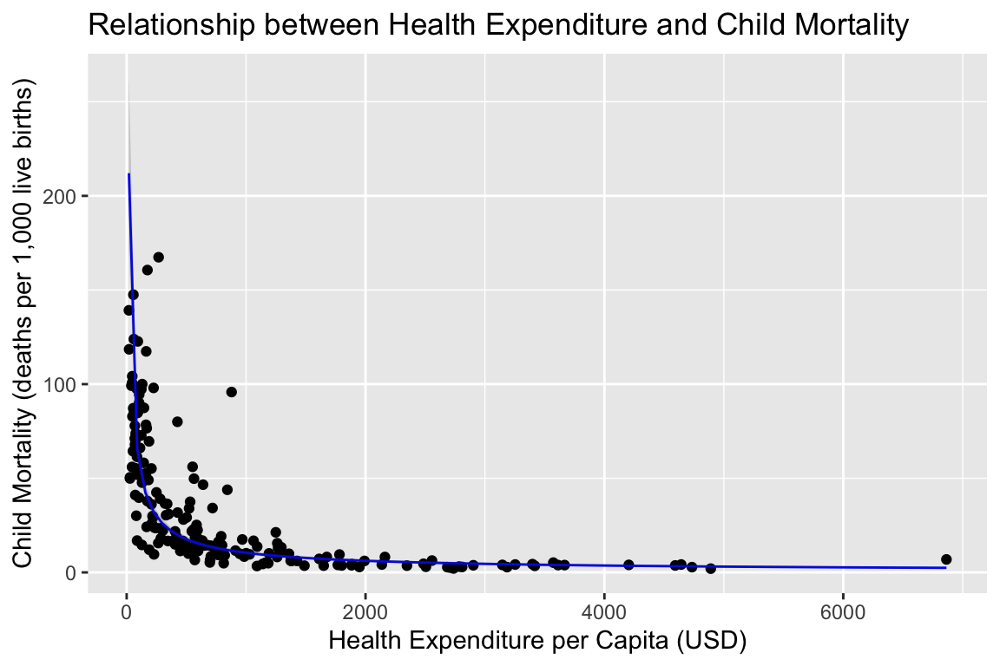

Introduction
On this web page you will find the homework, practical exercises and weekly quiz for Unit 4 of BIO144.
All other information for the course is on the OLAT course webpages, and web pages linked to from there: OLAT BIO144 Info. Hub
Homework
All homework is for your own practice and learning. It will not be marked or graded.
Homework common to all weeks:**
Review the material from the lecture(s) this week. Make sure you understand the concepts and ideas presented. Ensure you can follow any mathematical or statistical explanations. Ensure you can do the R that is needed for the week’s learning objectives.
When you find things you don’t understand or have trouble doing (e.g., in R), make a note of these. You can then ask a teaching assistant (TA) for help during the practical session, and you can ask on the Discussion Forum on OLAT. You can also ask questions during the lectures.
Reading
Finish reading section 5.5 of Beckerman, Childs, and Petchey.
Video walkthrough
You started watching a video walkthrough of regression in R during the previous Unit. In the video below you can continue watching. The video will automatically start at 9 min 15 sec, since before that is not so relevant.
Seeing theory
This amazing website is a visual introduction to probability and statistics. It is worth exploring this website to help you understand some of the statistical ideas we cover in this course. Here is the section on regression.
Practical part 1
Interpreting regression results
Last week we worked with the financing healthcare dataset. We will continue working with this dataset this week.
Bring up your script from last week. It should already include:
- Loading the dataset.
- Some initial exploration of the dataset.
- Some initial plots of the dataset.
- Fitting a linear model to the dataset.
- Checking the assumptions of the linear model.
Now that we have checked the assumptions of the linear model, we can interpret the results of the model. We need to look at a few things:
- The slope.
- The intercept.
- The amount of variability explained.
- The statistical significance.
- The degrees of freedom for error.
However, stop! Before you continue, make guesses of the intercept, slope, significance, and degrees of freedom for error. Write your guesses down somewhere. Do not move on until you have done this!
We can get all of these with one function in R:
summary(). Add this to your script, run it, and work
through the following questions.
A true story… when Prof. Petchey wrote this practical, he did exactly
what he’s now advising you: make a guess of the slope from the graph,
and then use lm() to calculate the slope. However, he found
that they were quite different! The guessed slope was about -0.75 but
the value given by lm was around -1.0. This was too big a difference to
ignore! It was like an alarm bell ringing, that something was probably
wrong. Prof. Petchey found that he’d got the response and explanatory
variable in the lm switched the wrong way round. Fixing this made the
calculated slope also about -0.75.
This is a real example of how making a guess before doing the analysis and comparing this to the calculated value provides us with a method for cross checking our work. If we always build in such cross checks, we will much more frequently spot our mistakes. And if there is one thing that’s certain… we will make mistakes!
Checking back: You made and wrote down guesses of the intercept, slope, significance, and degrees of freedom for error. Were your guesses close to the estimated values? Mine were very close. So in this case, we didn’t gain any qualitative information from the regression, but we did gain some quantitative confirmation of what we already new. This is often the case for simple problems, like regression: we can see just as much from looking at the data as we can from a formal regression analysis. We do both, as then we can be more confident in our results. We should never trust only looking at our data, and we should never trust only doing an statistical test. We always should do both and compare them.
Reporting the results
When reporting the results of a regression analysis, it is important to focus on the key components that convey the most meaningful information about the relationship being studied.
So this would be our sentence reporting the results:
On a log-log scale, there was a negative and linear relationships between child mortality and health care spending, with approximately 1 unit of difference in log health care spend corresponding to -1 unit change in log child mortality (linear regression, 184 degrees of freedom for error, t = 24.1, p < 0.0001).
Reporting graphically
Make a beautiful graph that you would be happy publishing, for all the world to see. (Use the x and y log transformed data still.)
Ensure:
- Appropriate size and dimensions of all elements.
- Appropriate axis labels with units of measurement.
- Appropriate text size and point sizes.
- Include the regression line with a confidence interval band.
Special distinction if you can:
- Add some labels to the data points, so one can see which countries are which.
- Colour the points by continent, and include a graphical key.
A linear-linear graph
A thorny issue remains! We have reported our results based on analysis of the log transformed data. For the purposes of you learning about regression, this is just fine. You learned what can be applied in all cases.
However, there is an extra step that we should at least think about: what do our findings imply about the relationship between the untransformed variables? This is quite relevant, because we’re often interested in money, not log transformed money, and child mortality, and not log transformed child mortality.
Here is the graph of the data and regression line back on the raw (untransformed axes) (the code to make this is at the bottom of this page):

fh_data <- read_csv("financing_healthcare.csv")
fh_2013 <- fh_data |>
dplyr::filter(year == 2013) |>
dplyr::select(country, health_exp_total, child_mort) |>
tidyr::drop_na() |>
dplyr::mutate(
log_health_exp_total = log10(health_exp_total),
log_child_mort = log10(child_mort)
)
mod1 <- lm(log_child_mort ~ log_health_exp_total, data = fh_2013)
new_data <- data.frame(
health_exp_total = seq(min(fh_2013$health_exp_total), max(fh_2013$health_exp_total), length.out = 100)
)
new_data <- new_data |>
dplyr::mutate(
log_health_exp_total = log10(health_exp_total)
)
preds <- predict(mod1, newdata = new_data, interval = "confidence")
new_data <- new_data |>
dplyr::mutate(
log_child_mort_fit = preds[, "fit"],
log_child_mort_lwr = preds[, "lwr"],
log_child_mort_upr = preds[, "upr"],
child_mort_fit = 10^(log_child_mort_fit),
child_mort_lwr = 10^(log_child_mort_lwr),
child_mort_upr = 10^(log_child_mort_upr)
)
ggplot() +
geom_point(data = fh_2013, mapping = aes(x = health_exp_total, y = child_mort)) +
geom_line(data = new_data, aes(x = health_exp_total, y = child_mort_fit), color = "blue") +
geom_ribbon(data = new_data, aes(x = health_exp_total, ymin = child_mort_lwr, ymax = child_mort_upr), alpha = 0.2) +
#scale_x_log10() +
#scale_y_log10() +
labs(
x = "Health Expenditure per Capita (USD)",
y = "Child Mortality (deaths per 1,000 live births)",
title = "Relationship between Health Expenditure and Child Mortality"
) Weekly Quiz